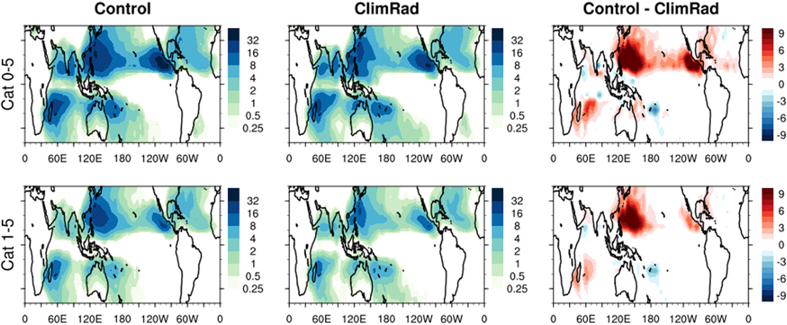
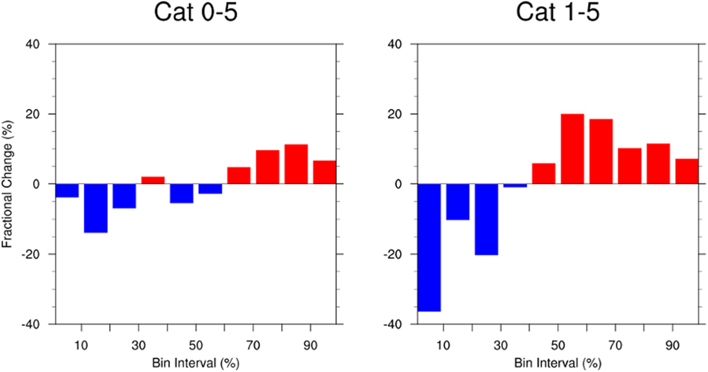
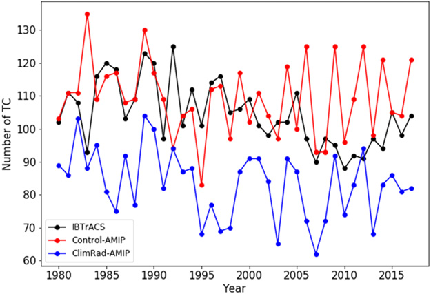
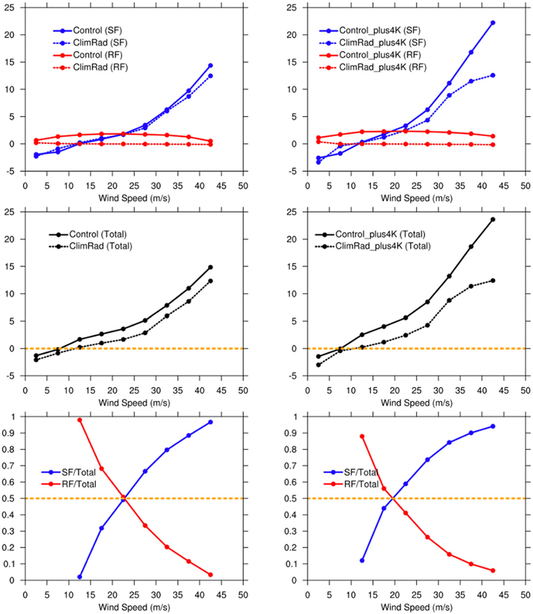

Lower TC Count
Suppressing synoptic-scale radiative interactions reduces global TC frequency.
Journal of Climate (2021)
TC-permitting mechanism-denial experiments show that synoptic radiative interactions are required for realistic pre-TC development and global TC frequency under observed-like forcing.
Lower TC Count
Suppressing synoptic-scale radiative interactions reduces global TC frequency.
Coastal Shift
Genesis locations shift and storm lifetimes shorten in ClimRad-style experiments.
Warming Dependence
Radiative-control sensitivity weakens as latent-heating influence grows in warmer climates.
Paper Citation
Zhang, B., B. J. Soden, G. A. Vecchi, and W. Yang, 2021: The Role of Radiative Interactions in Tropical Cyclone Development under Realistic Boundary Conditions. Journal of Climate, 34, 2079-2091. https://doi.org/10.1175/JCLI-D-20-0574.1
How strongly do synoptic-scale radiative interactions contribute to tropical cyclone development and frequency under realistic boundary conditions, and how does that role change with warming?
Extracted from Zhang et al. (2021, Journal of Climate, https://doi.org/10.1175/JCLI-D-20-0574.1).
Figure 3 (Extracted)

Figure 8 (Extracted)

Additional Extracted Figure

Additional Extracted Figure
